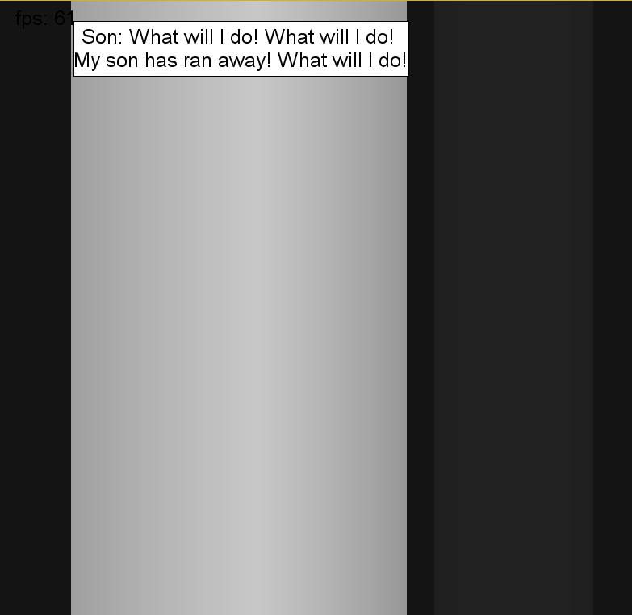

First Person Perspective Flatland Game
Simon MikulcikEdwin A. Abbott wrote Flatland in 1884. He designed a 2D world in which polygons live and interact. He described the society of these 'Flatlanders,' and emphasized how important shape recognition is to the class system in Flatland: the more sides a polygon has, the higher class he has. This game recreates the world of Flatland and places the player as A Square in Flatland. This game also set in a first person perspective from a Flatlander: you see a one dimensional image.
Ok, so here is an overview of the game:
- First Person Perspective (I built a simple raytracer to render the view)
- Character: A Square
- Plot: A Square's Grandson ran away and you have to find him.
- Programmed 100% in Java.
- Controls:
- Move mouse to look left and right
- WASD/Arrow Keys to move

Screenshot from Game
Screenshot from Game
This is a project for my Honors class, Stories and Structures, at Eastern Kentucky University.